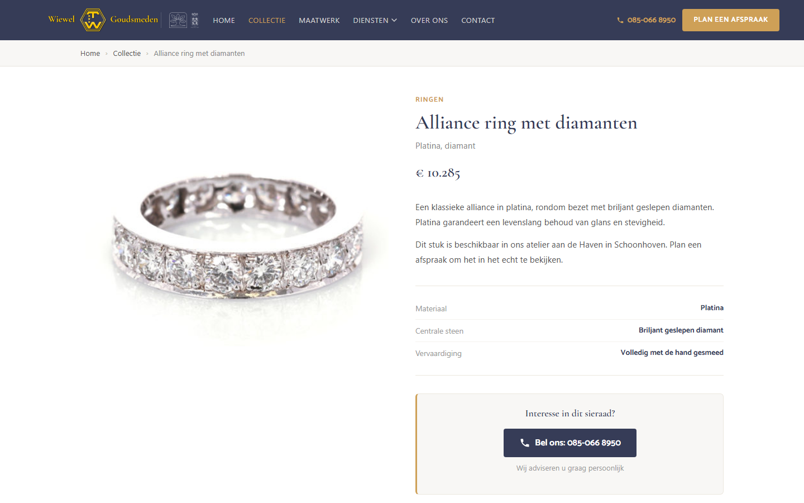
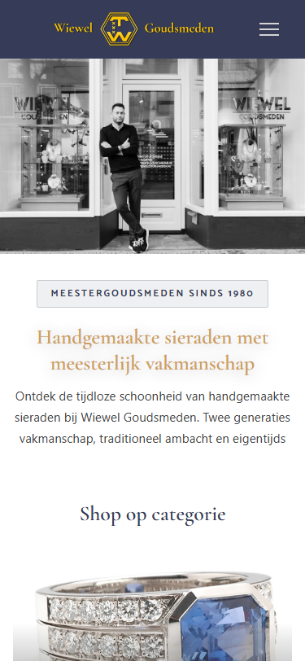
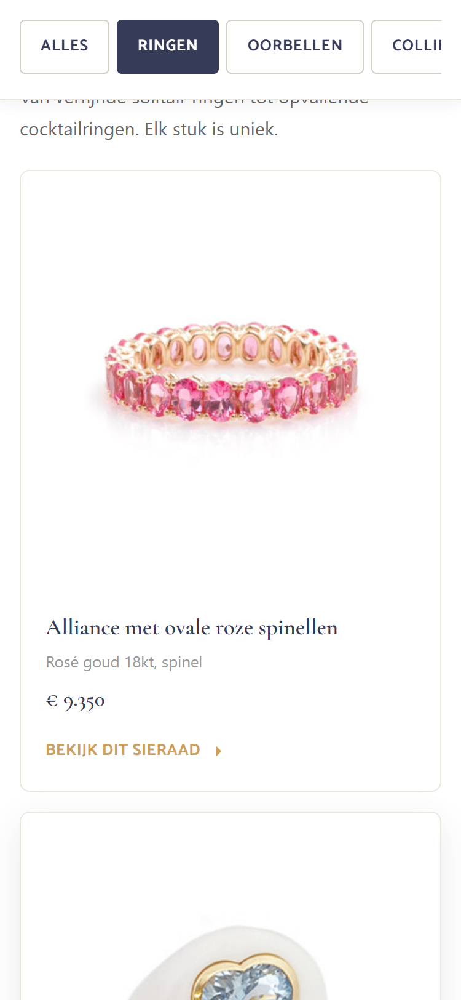
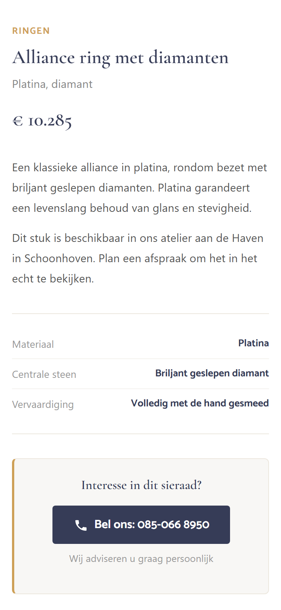
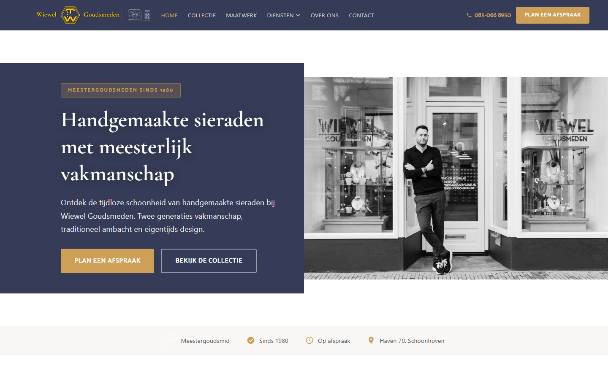
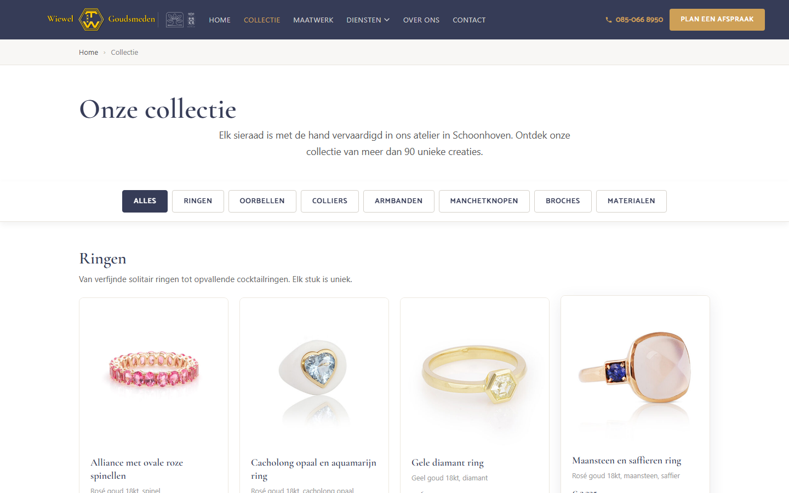

Wat we hebben veranderd en waarom
Maart 2026 · Voor Thijs Wiewel
"Plan een afspraak" direct zichtbaar, slim menu dat meeschuift, vertrouwensbadges in beeld.
Alle sieraden op één pagina met sticky categorie-knoppen. Geen paginering meer.
Juwelier-schema, OG tags en Product-schema toegevoegd. Google kan je beter tonen.
Geen WordPress meer. Puur handgeschreven code. Laadt in 4,7 seconden ipv 19,5.
De huidige site gebruikt Hotjar + Google Analytics zonder toestemming te vragen. Dat mag niet.
Op elke pagina, op elk apparaat. Bezoekers hoeven niet te zoeken.
Google test automatisch elke website. Hogere score = beter zichtbaar.
De nieuwe site is 4x sneller interactief. Reden: geen WordPress, lettertypen op eigen server, slim laden van afbeeldingen.
Test zelf: pagespeed.web.dev
Kern: de huidige site behandelt elk sieraad hetzelfde. De nieuwe site past de pagina aan op het sieraad: andere knop, andere toon, vertrouwenssignalen eronder.

Productpagina: foto, specs, prijs, bel-CTA, trust signals

Mobiel: hero met foto + CTAs

Collectie: filter op Ringen

Productpagina: bel-CTA

Homepage desktop

Collectie desktop
Zelf bekijken: preview link
1. Bekijk de preview en geef feedback
2. Aanpassingen doorvoeren
3. Live zetten op wiewelgoudsmeden.nl
Erik Visser · JouwPraktijkWebsite.nl